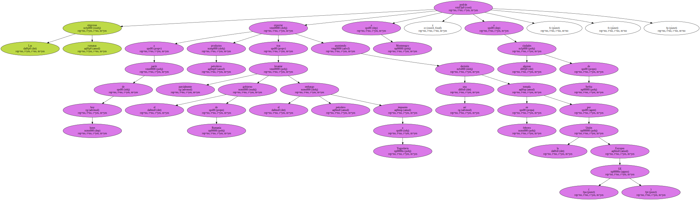
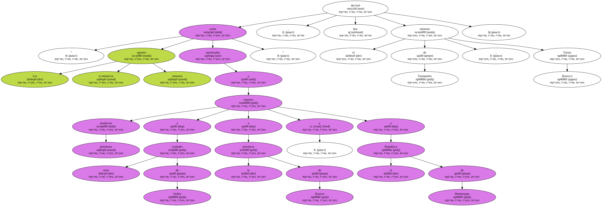
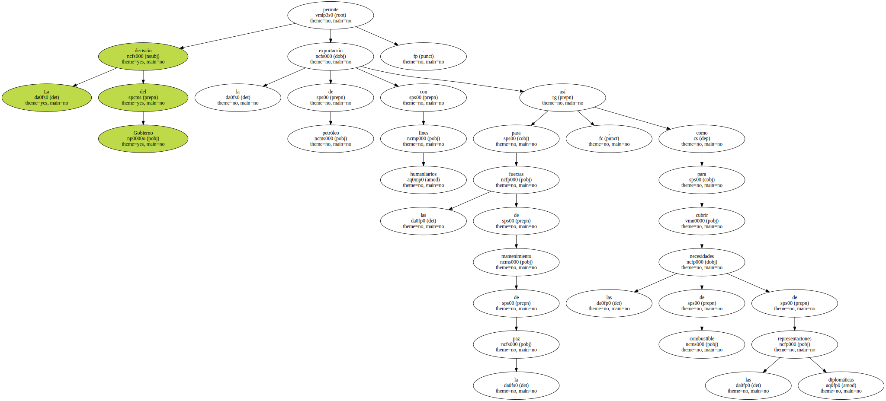
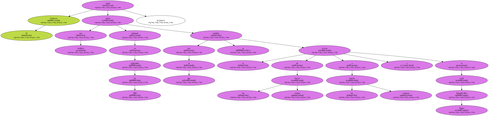
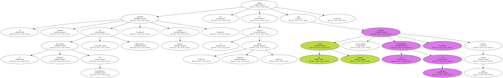
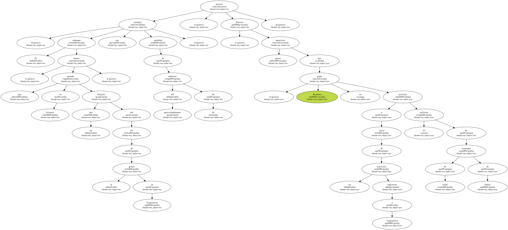
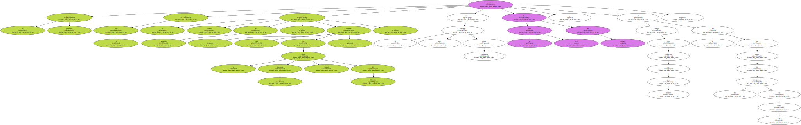

Las empresas rumanas podrán exportar a partir de hoy lunes productos petroleros a Montenegro y a algunas ciudades de Serbia , tras levantar parcialmente el gobierno de Rumanía el embargo petrolero impuesto a Yugoslavia , asumiendo así una decisión tomada en febrero por la Unión Europea ( UE ).
" Los agentes económicos rumanos están autorizados a exportar productos petroleros a siete ciudades de Serbia , a la provincia de Kosovo y a la República de Montenegro " , declaró hoy el ministro de Transportes , Traian Basescu.
La decisión del Gobierno permite la exportación de petróleo con fines humanitarios para las fuerzas de mantenimiento de la paz , así como para cubrir las necesidades de combustible de las representaciones diplomáticas.
De acuerdo con esta decisión , se aplicarán sanciones administrativas o incluso penales para los transportes que no tengan los destinos autorizados.

El Gobierno anuló también una orden adoptada en septiembre de l999 por la que se prohibía el acceso de los barcos serbios a los puertos rumanos y al canal Danubio-Mar Negro.
El secretario general de la Asociación Nacional de Exportadores e Importadores , Mihai Ionescu , declara hoy en el rotativo " Ziarul Financiar " que las firmas rumanas aprecian positivamente el levantamiento del embargo , aunque viniera tarde.
" El embargo , que hemos tardado en levantar un año después del fin de la guerra en Yugoslavia , nos produjo pérdidas de aproximadamente mil millones de lei " , precisó Ionescu , quien mencionó que a causa de las sanciones impuestas a Yugoslavia , Rumanía no pudo procesar 3,5 millones de toneladas de crudo de Serbia.
Tan solo los operadores portuarios y las compañías navales de Rumanía , - que cuentan con la más importante flota fluvial del Danubio - , perdieron durante el embargo total contra Yugoslavia más de 250 millones de dólares , al tiempo que el 80 por ciento de los trabajadores de este sector estuvieron en paro técnico.
